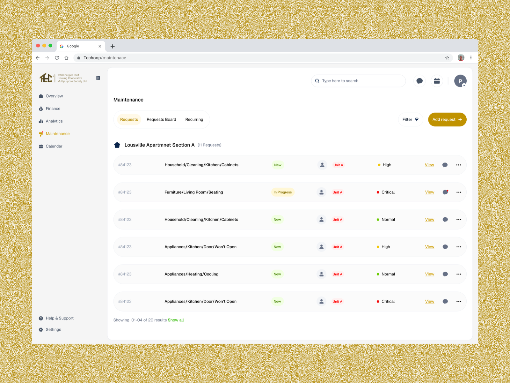
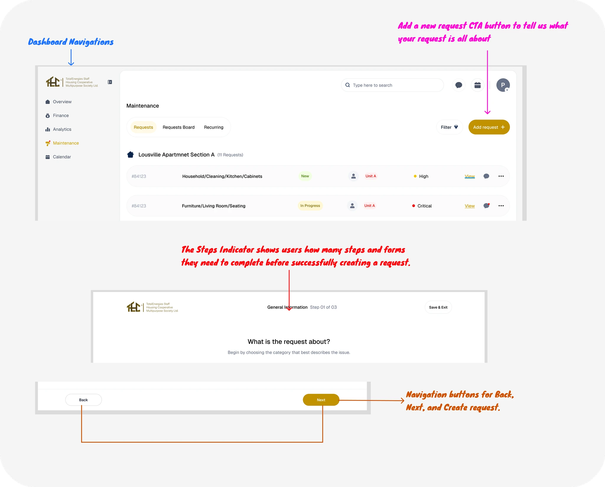
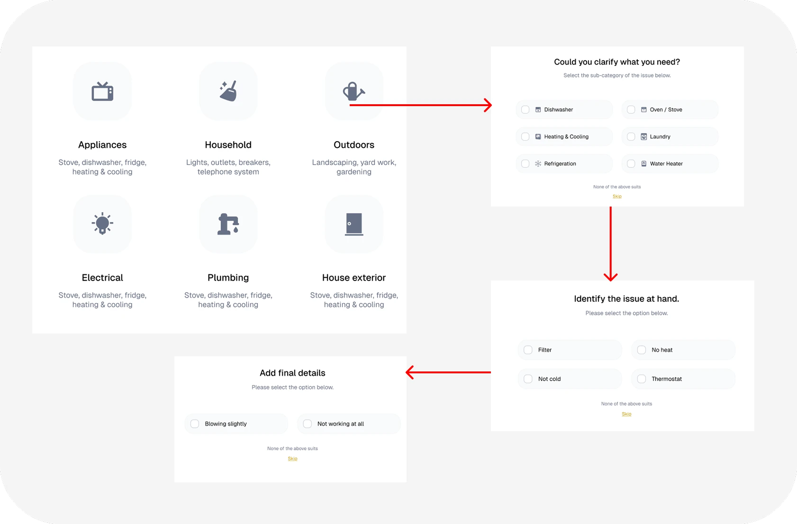
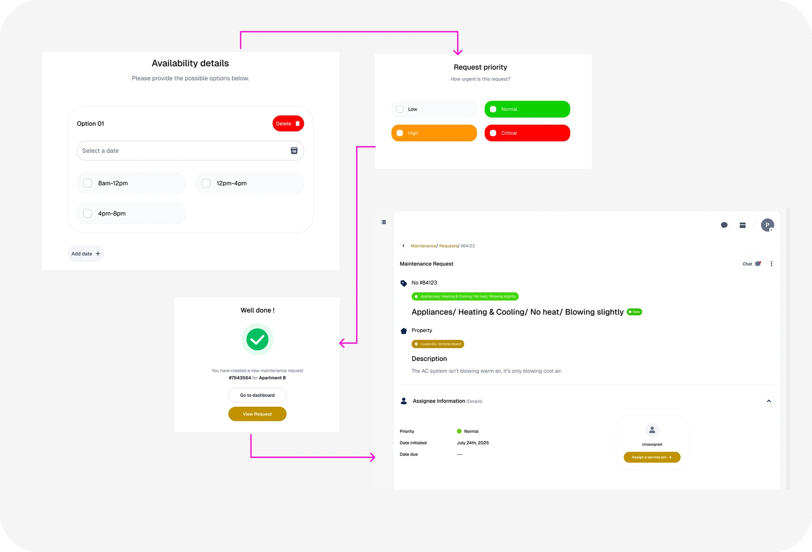
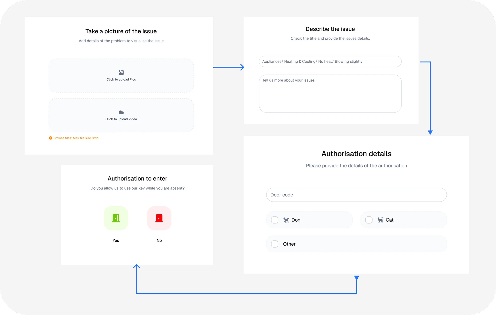
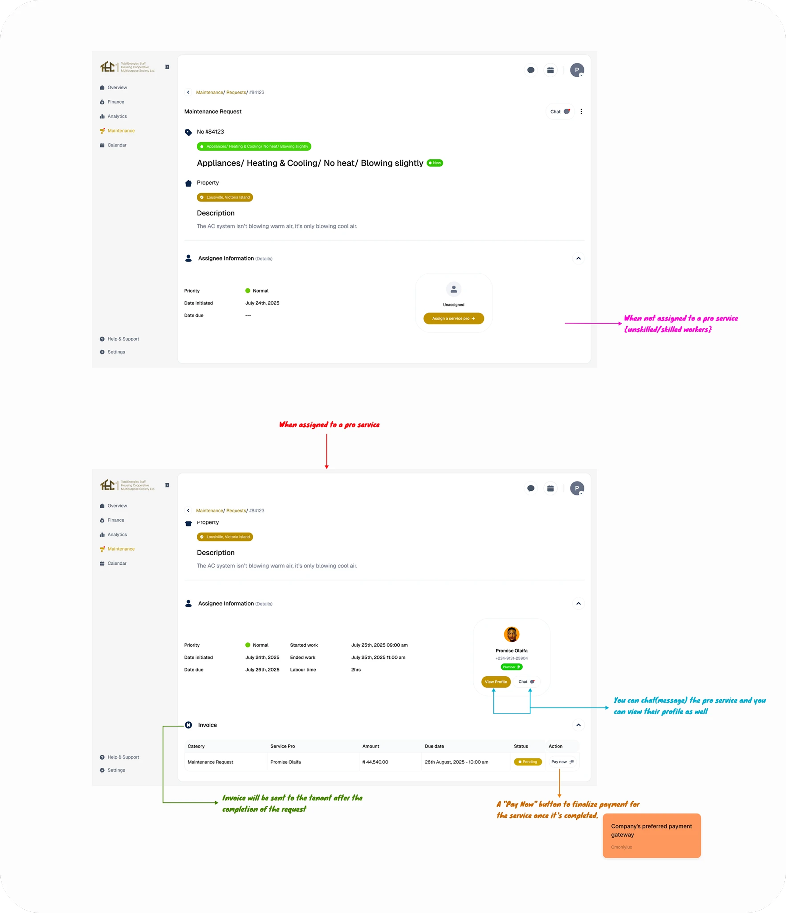
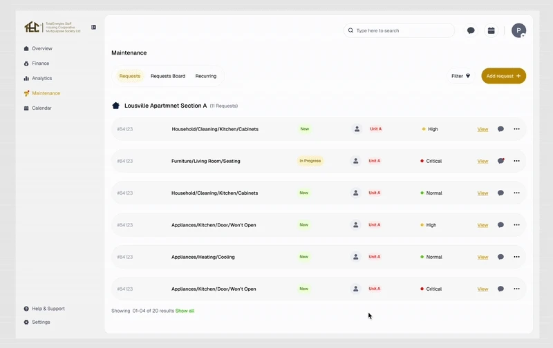
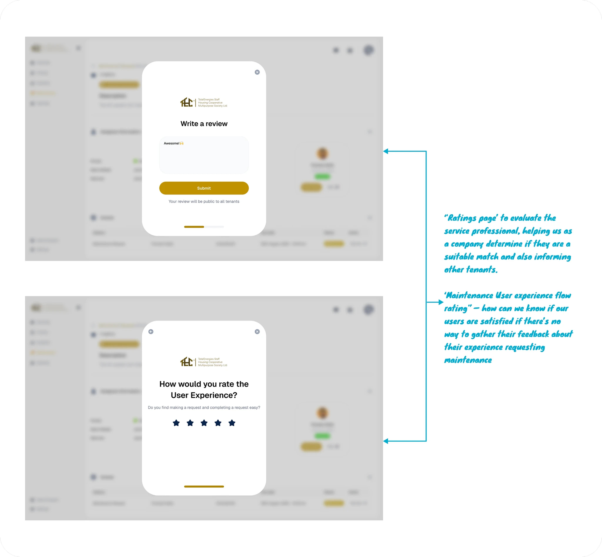

TEHCOOP — Maintenance Flow
TEHCOOP needed a way for tenants to report building issues and stay informed every step of the way. I was given a brief, and this is exactly what I built — and why every decision was made.

A tenant sees a leaking tap. They don't want to figure out a complicated system. They just want to say "this is broken" — and trust that someone will fix it. That one thought shaped every screen I designed.
A real company.
A real problem.
TEHCOOP is a real company building something important — a digital platform that connects property managers, tenants, and maintenance staff. Louisville is their real estate project. Think about it like this: hundreds of tenants living in a building. One morning, someone's tap is leaking. Another person's light has been flickering for three days. These are small problems — but when there's no clear, easy way to report them, they become big frustrations. And frustrated tenants don't stay.
The platform needed to solve this for three different types of users — tenants who want to report issues, managers who need to assign and track them, and maintenance staff who have to act on them. I was brought in during the interview process and handed a brief. No hand-holding. Just a problem to solve.
A design brief became
a real product challenge.
The brief asked me to design a Facility Management Dashboard that enables tenants to log maintenance requests, track progress, and make payments — while giving managers and maintenance staff the tools they need to move fast and communicate clearly.
I was asked to suggest 2 features that address key pain points, then design a complete user flow for one scenario. My two feature recommendations were:
Feature 01 — Maintenance Request & Tracking
A structured way for tenants to report building issues — with photos, descriptions, and priority levels — and then track the status of that request in real time. No more calling the front desk to ask what's happening.
Feature 02 — Automated Status Notifications
Live updates pushed to tenants at every stage of their request — from technician assignment to work in progress to fully resolved. The tenant is informed without having to ask. The manager spends less time on follow-up calls.
I chose to design Feature 01 in full — the tenant submitting a maintenance request — because it sits at the very start of the journey. If this experience is broken, nothing else works.
I didn't open Figma first.
I thought about a real moment.
Before drawing a single screen, I imagined a specific situation: it's 7am, you've just noticed water dripping from your ceiling. You're already slightly irritated. The last thing you want is to download an app, create an account, navigate five menus, and fill out a paragraph-long form just to say "my ceiling is leaking."
You want to describe the problem quickly, attach a photo so there's no confusion, and then go about your day knowing someone is on it. That's the experience I designed for.
Every screen in this flow exists to answer one question: what does the tenant need right now? Not what the system needs. Not what looks impressive. What the person in the moment actually needs — and nothing more.
Show them everything
at a glance.
The first screen a tenant sees is a clean overview of all their past and ongoing requests. Pending, in progress, resolved — everything is visible without any digging. No navigating through menus to find out what's happening with the tap you reported two days ago. The status is right there, in plain language, the moment you open the dashboard.
This screen also has one clear action: submit a new request. One button. No ambiguity. If something is broken, this is where you start.

All past and active requests visible on one screen. Status labels in plain language. One clear action: submit a new request.
Ask for exactly
what you need. Nothing more.
The request form is the heart of this flow. This is the moment a frustrated tenant is typing on their phone at 7am — so the form has to be fast, clear, and impossible to get wrong.
Tenants describe the issue in their own words, upload a photo or short video so maintenance staff arrive knowing exactly what they're dealing with, and set a priority level so managers can triage effectively. Three fields. That's it. The form doesn't ask for more than it needs — because the more you ask for, the fewer people complete it.

The form before input — clean, uncluttered, nothing in the way. Three fields and a submit button. That's the whole thing.

The form filled in — description written, photo attached, priority set. Ready to submit in under a minute.
One extra step
that earns a lot of trust.
Before a request is submitted, the tenant sees a clear confirmation screen. This isn't just a technical step — it's a trust moment. The tenant reviews what they've submitted, confirms it looks right, and knows that what gets sent is exactly what they intended.
It also prevents accidental submissions. No phantom requests clogging up the manager's dashboard. No "I didn't mean to send that" support tickets. The system stays clean because the tenant is given one final moment of clarity before anything goes live.

Review what you're submitting. Confirm it's right. Nothing goes through without the tenant's deliberate sign-off.
From "I reported it"
to "it's fixed" — in real time.
This is the screen that makes everything else worth it. Once a request is submitted, the tenant can track it in real time — from the moment a technician is assigned, to when work begins, all the way to when the issue is marked resolved.
Every status update is written in plain language. Not "request_status: TECH_ASSIGNED_002" — but "A technician has been assigned to your request." The system communicates like a person, not a database. The tenant knows what's happening, when it's happening, and who is responsible — without ever having to call anyone.

Live status tracking: technician assigned → work in progress → resolved. Plain language at every stage. The tenant is never left wondering.
Four screens.
One seamless journey.
Every screen feeds directly into the next. There are no dead ends, no confusing jumps, no moments where the user is left wondering what to do. The flow was designed to feel less like using software and more like having a conversation with a helpful building manager.


Good design isn't decoration.
It's the difference between chaos and clarity.
This design improves two things that matter most in property management: how quickly problems get reported, and how confidently tenants feel during the process. Every screen removes a reason for frustration and replaces it with a reason to trust the system.
For TEHCOOP, a platform tenants actually enjoy using means higher retention, fewer complaints escalated to management, and a building that runs itself better. The maintenance flow is a small part of the dashboard — but it's the part every tenant touches every time something goes wrong. Getting it right isn't optional.
Great design means nothing
if it can't be built.
Over the past two months, I've been learning to implement my own designs — HTML, CSS, JavaScript. That changes how I think in Figma. Before I commit to a pattern, I ask myself whether a developer can actually build it without three days of custom work. I don't design beautiful things that can't ship.
I'm also genuinely collaborative. I share ideas early, ask questions often, and align with product managers before I go too deep on any screen. The best designs aren't made by one person working in isolation — they come from a team that talks to each other, catches problems early, and cares about the same outcome. I'm that kind of designer.